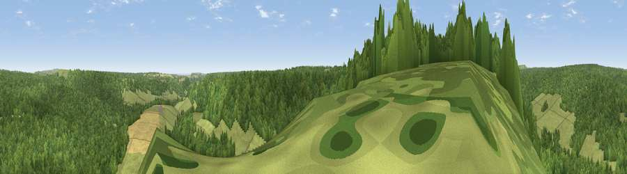

Viewpoint near Langdale End
#20943 in England · top 44% of its area beats it · near Langdale EndThe view, rendered

A 360° render of this exact spot computed from the terrain model, tree cover and land cover — summer colours, afternoon light, calibrated against photographs of famous viewpoints. Real trees, hedges and buildings will differ in detail.
The panorama
Grey silhouette: terrain skyline in each direction (720 bearings, Earth curvature and refraction included). Dashed green: skyline with trees (+15 m) and buildings (+8 m) as obstacles. Blue strip: how far the ground is visible on each bearing.
Where the view opens
Wedge length = distance to the farthest visible ground on that bearing (vegetation-aware). Rings at 10, 25 and 50 km.
What fills the view
58% woodland · 39% grassland · 3% cropland
Angular shares of the visible panorama (visual magnitude), not map area. Landscape diversity 0.34 (0–1 Shannon).
Key numbers
More beautiful places nearby
The staircase of upgrades: each row has a higher view potential than everything closer. Driving times are estimates from straight-line distance, calibrated against real road routing — check an actual route before setting out.
| Place | Direction | Drive | Score |
|---|---|---|---|
| Langdale Rigg End | NE · 3 km | ~8 min | 65.1 |
| Viewpoint near Burniston | E · 8 km | ~15 min | 74.3 |
| Viewpoint near Burniston | E · 8 km | ~16 min | 78.3 |
| Viewpoint near Staintondale | ENE · 10 km | ~20 min | 80.4 |
| Viewpoint near Ravenscar | NNE · 11 km | ~21 min | 87.3 |
| Viewpoint near Ravenscar | NNE · 11 km | ~21 min | 90.0 |
| Viewpoint near Easington | NNW · 33 km | ~50 min | 90.2 |
| The Knoll | SSW · 427 km | ~403 min | 91.0 |
54.31570, -0.60148 · source: screening · position refined by local search. Computed location — check access rights before visiting.